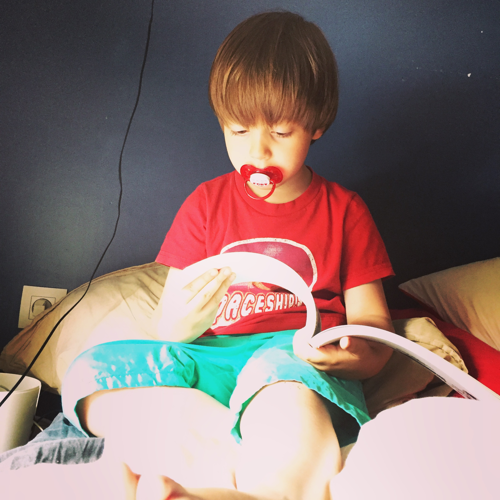

Tentative de sieste et découvertes BD
Il est quelque fois difficile de convaincre Johann de se poser pour une petite sieste. Alors il faut accepter qu’il emprunte une bd de Gaston et qu’il rigole dans son coin.

Et tout ça sous l’œil presque pas stressé de son papa !
C’est décidé, je me lance dans la collection des recueils du Journal de Spirou !